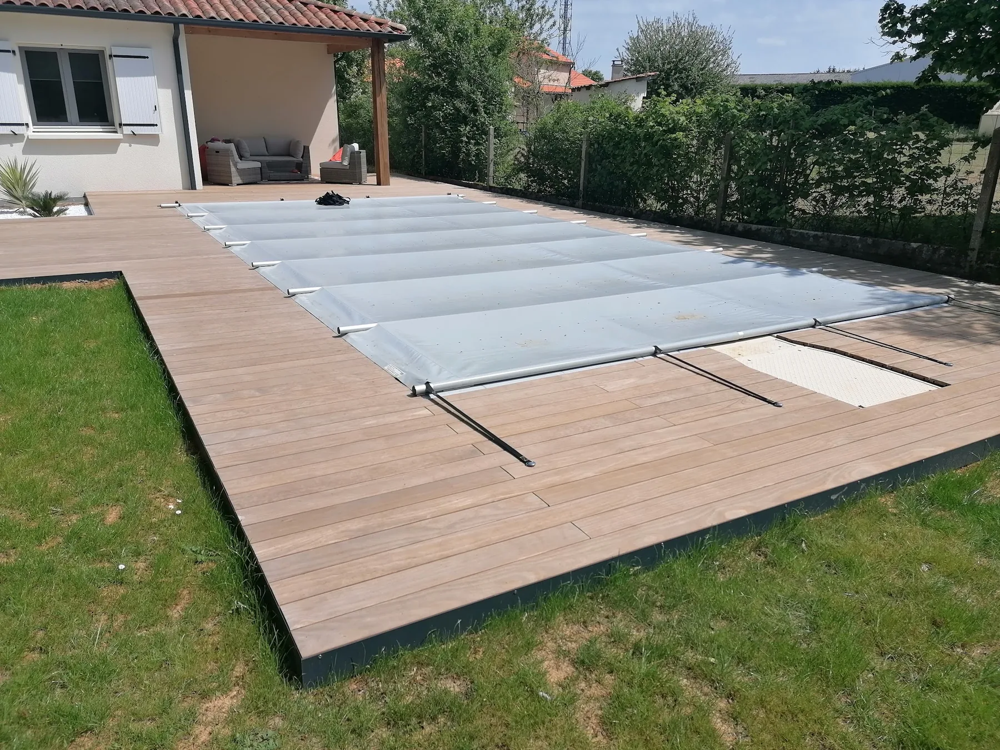

Créer, réaliser, profiter.
Terrasses, massifs, allées, accès, clôtures, pergolas ou jeux d’eau : chaque élément est pensé dans la composition globale de l’extérieur.
Parler de mon projet →
Massifs
Composer les volumes, textures et floraisons pour créer un jardin expressif et cohérent tout au long des saisons.
Terrasses & plages de piscine
Créer une véritable pièce de vie extérieure à partir de solutions bois, minérales ou céramiques adaptées au projet.
Allées & accès
Structurer les circulations et les entrées en conciliant esthétique, confort, drainage et usage quotidien.
Portails & clôtures
Délimiter et sécuriser l’extérieur tout en travaillant la vue depuis la maison comme depuis la rue.
Pergolas & abris
Prolonger les usages du jardin et intégrer des zones couvertes ou de rangement dans l’ensemble paysager.
Éclairage & jeux d’eau
Mettre en scène les ambiances du soir ou apporter une dimension apaisante et sensorielle au jardin.
Quelques images, plusieurs façons d’habiter dehors.
Cliquez sur une photo pour l’agrandir.


{kind=link}
{kind=link}
{kind=link}
{kind=link}
{kind=link}
{kind=link}
{kind=link}